STORE
- The store page lists the games available on the website. Admins have
the capability to add or delete games.
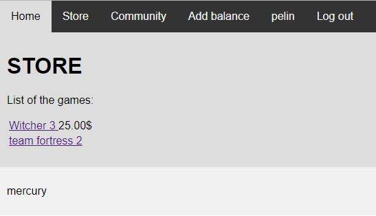
The store seen by a regular user
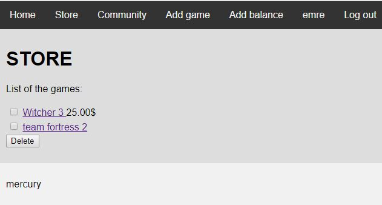
The store seen by an admin
Adding games to the store
- Admins can add games to the store via the “Add game” link in the
navigation bar.
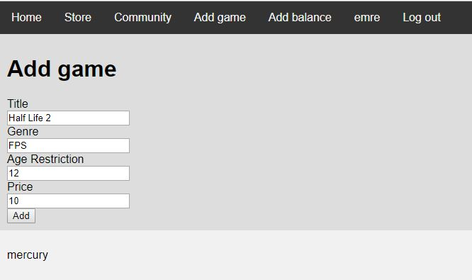
The data about the game has to be provided.
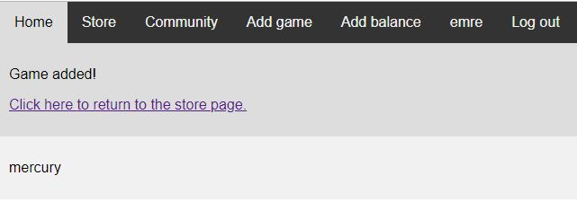
The result page after the game is added.
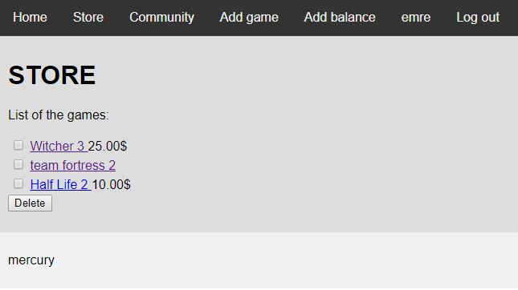
The added game is now listed at the store.
Deleting games from the store
- Games can also be deleted by admins.
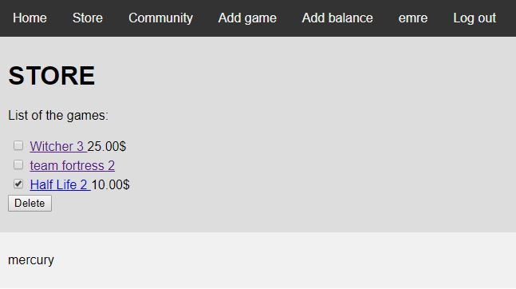
The game to be deleted is checked
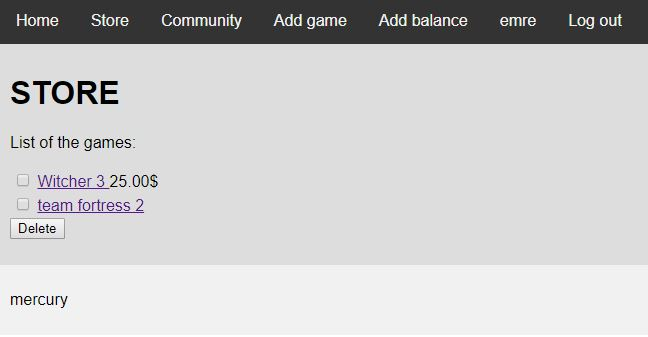
The selected game is deleted from the website
GAME PAGE
- The game page can be reached by clicking the name of the game on
the store. This page contains the data of the game and buttons for
various features, such as purchasing, rating and (for admins)
editing the game.
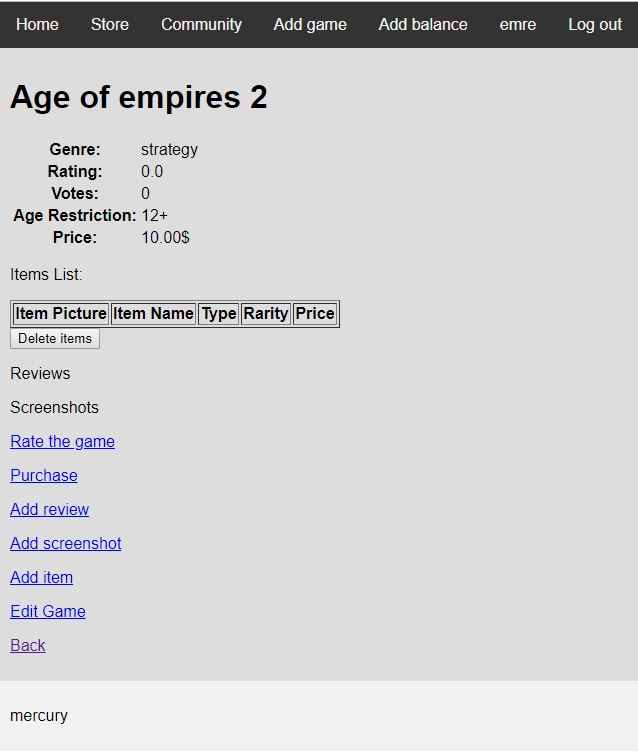
The game page
Rating a game
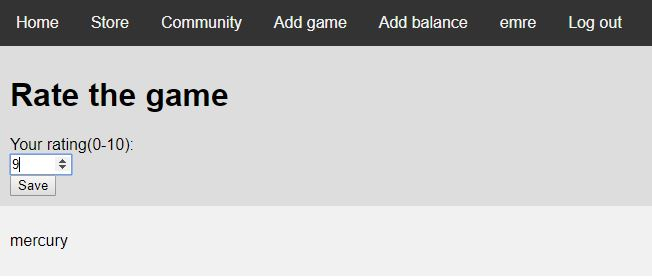
The rating is entered by the user
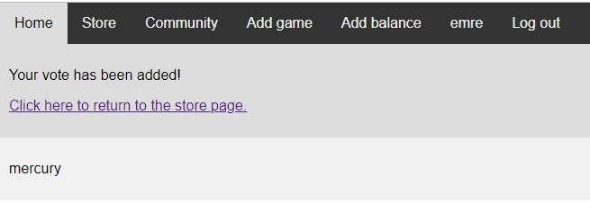
The vote is processed
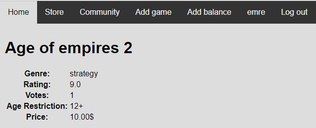
The game has been rated
Editing a game
- Admins can change the information of the game
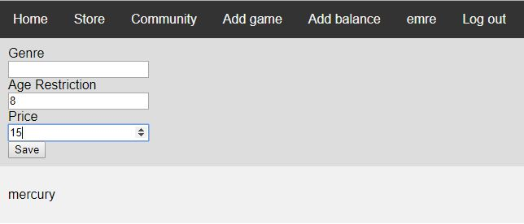
The new data has to be provided. If a field is left blank, the
original information is preserved.
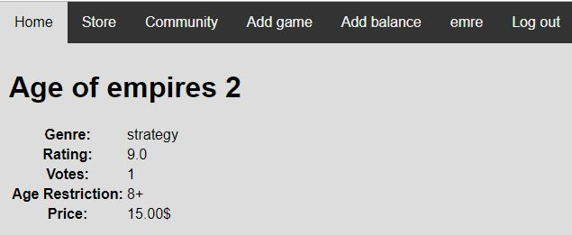
The data of the game has been changed
Purchasing a game
- Users can purchase a game if they have enough balance. Admins have
infinite balance.
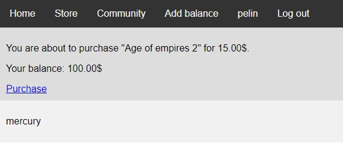
Game is about to be purchased
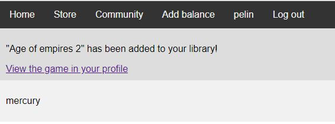
Game is purchased
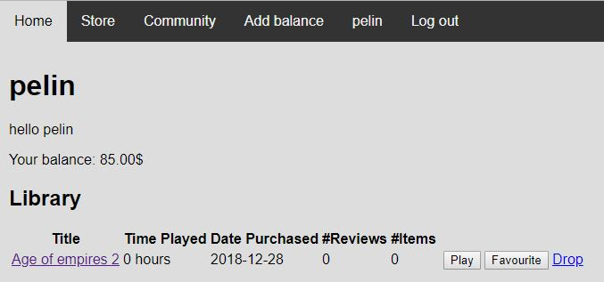
The user can view the game in their profile
Adding Balance
- Users have to enter a valid code to add balance to their account.
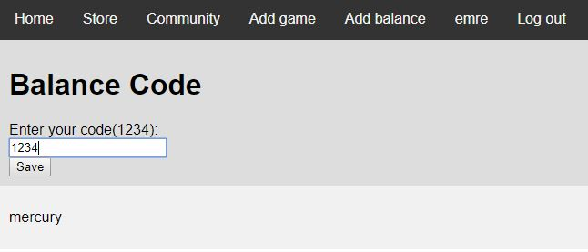
One such code is “1234”
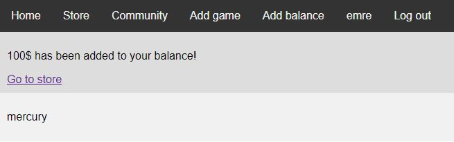
100$ has been added to the user’s account
PROFILE
In their profile, users can view their library of the games they
own, the list of their friends and the friend requests they have
sent and received.
Library
User’s library
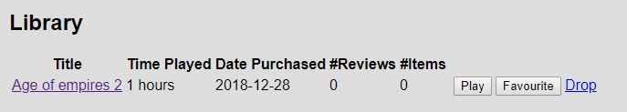
Game has been played 1 hour
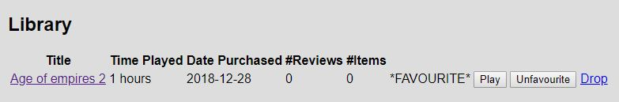
Game is favourited by the user
The game is deleted from the user’s library
Friends
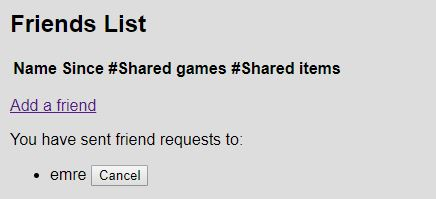
A friend request has been sent
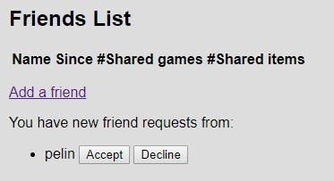
The request has been received by the other user
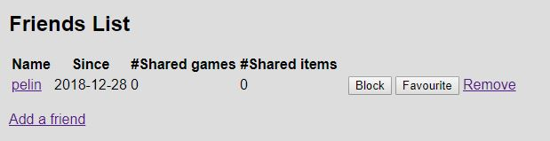
The request is accepted
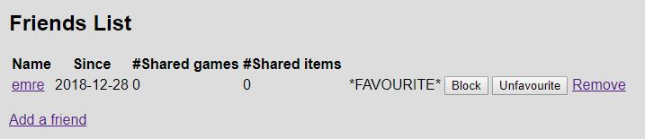
The friend is favourited by the user
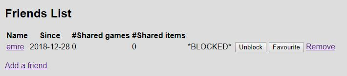
The friend is blocked by the user
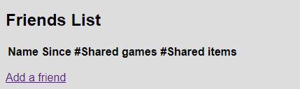
The friend is removed
Avatar
Users can upload an image as their profile photo by clicking the
“Change avatar” button at the buttom of their profile page.
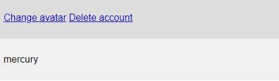
The link to the image uploading page
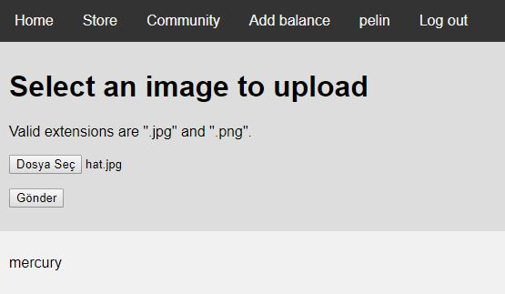
The image is selected from the user’s PC
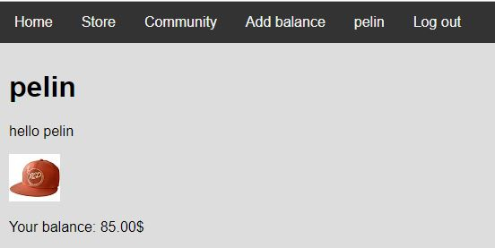
The new avatar is displayed on the profile
{kind=link}
{kind=link}
{kind=link}
{kind=link}
{kind=link}
{kind=link}
{kind=link}
{kind=link}
{kind=link}
{kind=link}
{kind=link}
{kind=link}
{kind=link}
{kind=link}
{kind=link}
{kind=link}
{kind=link}
{kind=link}
{kind=link}
{kind=link}
{kind=link}
{kind=link}
{kind=link}
{kind=link}
{kind=link}
{kind=link}
{kind=link}
{kind=link}
{kind=link}
{kind=link}
{kind=link}
{kind=link}